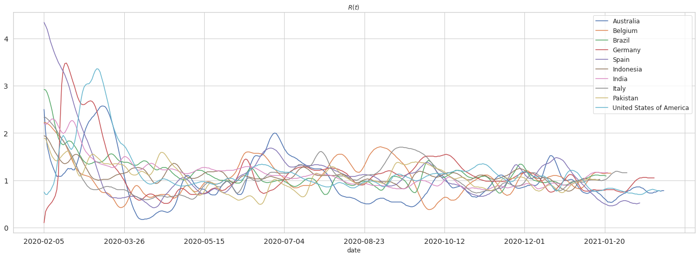
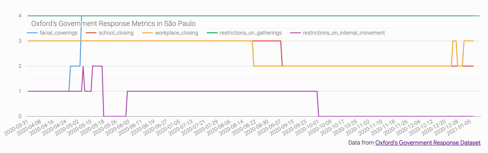

This repository contains the largest Covid-19 epidemiological database available in addition to a powerful set of expansive covariates. It includes open sourced data with a permissive license (enabling commercial use) relating to vaccinations, epidemiology, hospitalizations, demographics, economy, geography, health, mobility, government response, weather, and more. Moreover, the data merges daily time-series from hundreds of data sources at a fine spatial resolution, containing over 20,000 locations and using a consistent set of region keys.
For folks who want to jump right in...
For the research oriented - a data goldmine upon which to perform ML/AI forecasting, investigations anchored to myriad covariates, and much more.
For policy makers - auto-magically generated data visualizations that express thousand words (or sentiments) from anywhere in the world to aid in governance.
Surface data anywhere from as high as country level down to ISO/NUTS /FIPS codes. The different aggregation levels are:
- 0: Country
- 1: Province, state, or local equivalent
- 2: Municipality, county, or local equivalent
- 3: Locality which may not follow strict hierarchical order, such as "city" or "nursing homes in X location"
There are multiple types of data:
- Outcome data Y(i,t), such as cases, tests, hospitalizations, deaths and recoveries, for region i and time t
- Static covariate data X(i), such as population size, health statistics, economic indicators, geographic boundaries
- Dynamic covariate data X(i,t), such as mobility, search trends, weather, and government interventions
The data is drawn from multiple sources, as listed below, and stored in separate tables as CSV files grouped by context, which can be easily merged due to the use of consistent geographic (and temporal) keys as it is done for the main table.
| Table | Keys1 | Content | URL | Source2 |
|---|---|---|---|---|
| Main | [key][date] | Flat table with records from (almost) all other tables joined by date and/or key; see below for more details | aggregated.csv.gz | All tables below |
| Index | [key] | Various names and codes, useful for joining with other datasets | index.csv, index.json | Wikidata, DataCommons, Eurostat |
| Demographics | [key] | Various (current3) population statistics | demographics.csv, demographics.json | Wikidata, DataCommons, WorldBank, WorldPop, Eurostat |
| Economy | [key] | Various (current3) economic indicators | economy.csv, economy.json | Wikidata, DataCommons, Eurostat |
| Epidemiology | [key][date] | COVID-19 cases, deaths, recoveries and tests | epidemiology.csv, epidemiology.json | Various2 |
| Vaccinations | [key][date] | COVID-19 vaccine deployment metrics | vaccinations.csv, vaccinations.json | Various2 |
| Emergency Declarations | [key][date] | Government emergency declarations and mitigation policies | lawatlas-emergency-declarations.csv | LawAtlas Project |
| Geography | [key] | Geographical information about the region | geography.csv, geography.json | Wikidata |
| Health | [key] | Health indicators for the region | health.csv, health.json | Wikidata, WorldBank, Eurostat |
| Hospitalizations | [key][date] | Information related to patients of COVID-19 and hospitals | hospitalizations.csv, hospitalizations.json | Various2 |
| Mobility | [key][date] | Various metrics related to the movement of people. To download or use the data, you must agree to the Google Terms of Service. |
mobility.csv, mobility.json | |
| Search Trends | [key][date] | Trends in symptom search volumes due to COVID-19. To download or use the data, you must agree to the Google Terms of Service. |
google-search-trends.csv | |
| Government Response | [key][date] | Government interventions and their relative stringency | oxford-government-response.csv, oxford-government-response.json | University of Oxford |
| Weather | [key][date] | Dated meteorological information for each region | weather.csv | NOAA |
| WorldBank | [key] | Latest record for each indicator from WorldBank for all reporting countries | worldbank.csv, worldbank.json | WorldBank |
| By Age | [key][date] | Epidemiology and hospitalizations data stratified by age | by-age.csv, by-age.json | Various2 |
| By Sex | [key][date] | Epidemiology and hospitalizations data stratified by sex | by-sex.csv, by-sex.json | Various2 |
1 key is a unique string for the specific geographical region built
from a combination of codes such as ISO 3166, NUTS,
FIPS and other local equivalents.
2 Refer to the data sources for specifics about each
data source and the associated terms of use.
3 Datasets without a date column contain the most recently reported
information for each datapoint to date.